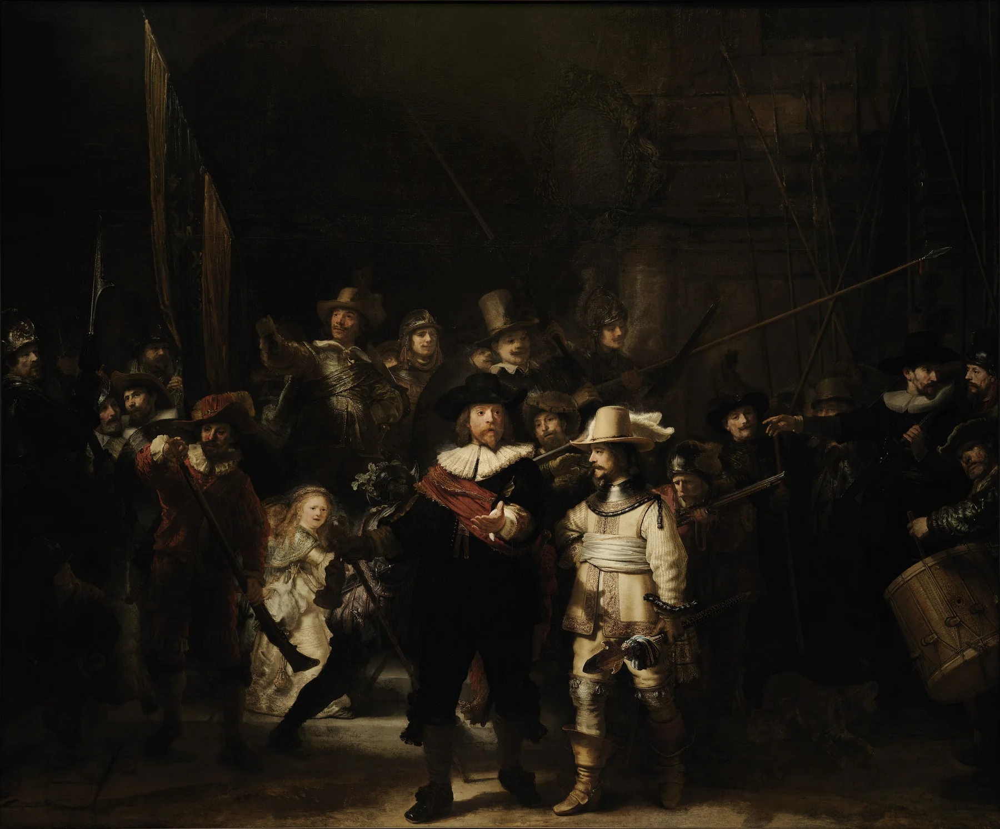

《夜警》は全員の顔を順番に見なくていい。①中央の明るい隊長と副隊長、②前へ出る隊長の手、③旗・槍・銃など斜めの線。この三つで、静かな集団肖像が「今から動き出す場面」に見えてきます。
《夜警》は「レンブラントの代表作」「大きな集団肖像」と知っていても、人物が多すぎて実際にはどこを見ればいいか迷う絵です。自分なら、全員を理解しようとせず、まず中央の二人だけに絞ります。そこから隊長の手へ、さらに周囲の斜め線へ目を動かす。人数の多さが“情報量”ではなく“動き”として見えてくると、かなり楽になります。

1. タイトルに引っぱられすぎない。「夜」そのものが主題ではない
《夜警》という通称から、夜中の警備場面を描いた絵と思いやすいのですが、作品はアムステルダムの市民隊を描いた集団肖像です。画面が長い年月のうちに暗く見えたことなどから「夜警」の名で知られるようになりました。
この知識を覚えることより大事なのは、暗いから夜と思い込まず「光はどこから当たっている？」と画面を見ることです。タイトルのイメージを一度外すと、明るい人物が意外と多く見えてきます。
2. まず中央の隊長と副隊長だけを見る
中央には黒い服の隊長フランス・バニング・コックと、明るい黄系の服を着た副隊長ウィレム・ファン・ロイテンブルフがいます。周囲の人物を一度無視し、この二人の明暗差だけを見ます。
黒い隊長の横に明るい副隊長を置くことで、二人が一つの中心になります。顔の細部より、黒と黄、前後の位置、身体の向きを大きな形として見るとつかみやすいです。
3. 隊長の「伸ばした手」が、画面の手前へ飛び出す
次に隊長の顔から、前へ伸ばした左手へ視線を下ろします。手には強い光が当たり、身体よりこちら側へ出ているように見えます。その手が、部隊を進ませる合図のような動きを作ります。
手の影が副隊長の服へ落ちるところも見どころです。人物二人がただ横に並ぶのではなく、光と影で前後がつながります。顔だけではなく、手を見た瞬間に「肖像」から「出来事」へ変わります。
4. 中央奥の明るい少女は、もう一つの光の焦点
中央の奥には、明るく照らされた少女の姿があります。隊長と副隊長ほど前にはいないのに、光が強いため目に入ります。大人数の中に、別の明るい島が作られています。
中央二人→少女へ視線を移すと、画面が前後に深くなります。光が同じ平面に並ぶのではなく、奥にも置かれることで、群像の中にいくつもの層ができます。
5. 槍、銃、旗。斜め線が静止画をざわつかせる
人物の顔をやめて、長い線だけ探します。上へ伸びる旗、斜めに交差する槍や銃、腕。縦横にきれいに並ぶ線より、いろいろな方向へ向く線が多いことに気づきます。
その斜め線が、今にも人が歩き出しそうな勢いを作ります。集団肖像なのに、全員が同じ姿勢で止まっていない。レンブラントが「記念写真」よりドラマを優先したことを、自分の目で確認できる場所です。
6. 最後に暗いところを見る。最初より人物が増えて見える
明るい人物と線を見たあと、周囲の暗部へ戻ります。最初は黒い背景にしか見えなかった場所に、顔、帽子、武器、衣服が少しずつ出てきます。
全部を明るく描けば情報は分かりやすくなりますが、レンブラントは見せる量に差をつけています。見えにくい人がいるからこそ、光を浴びる人物が強くなる。暗部も構図の一部です。
7. Rijksmuseumの実物では「大きさ」を最初に受け取る
《夜警》はレンブラント最大級の有名なキャンバスで、Rijksmuseumでも作品の大きさそのものが鑑賞体験になります。画像で全体を一度に見るのと、実物の前で人物を身体サイズに近く感じるのでは印象が違います。
群像の中の軸をつかむ。
前後方向の動きを見る。
旗・槍・銃を一本ずつ追う。
最初に見えなかった人物を探す。
作品の人数を覚える必要はありません。自分の目が「光→手→線→暗闇」と動いたことが残れば、《夜警》を自分で見た感覚になります。
全員を見ない。中央の光→手→斜め線。